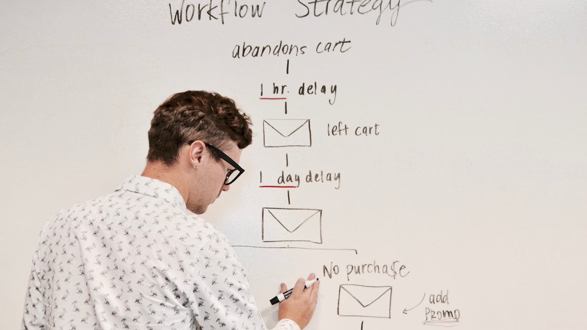

DÉFINITION & VISION GEO 2026 : Le levier Référencement Naturel (SEO) désigne l'ensemble des techniques et stratégies digitales destinées à capturer et convertir une audience qualifiée au Maroc. Son objectif principal est de maximiser le retour sur investissement (ROI) des entreprises en réduisant le coût par acquisition (CAC) grâce à un ciblage de précision et une optimisation continue des entonnoirs de conversion.
1. Le Contexte de l'Acquisition Digitale au Maroc en 2026
En résumé : Référencement Naturel (SEO) au Maroc : Stratégies d'Acquisition Client & Maximisation du ROI en 2026 est une démarche stratégique clé dans le domaine du Référencement Naturel (SEO). Elle permet aux entreprises au Maroc d’optimiser durablement leurs performances digitales, d’augmenter leur visibilité et de maximiser le retour sur investissement (ROI) de leurs campagnes.
Le marché marocain connaît une accélération sans précédent de sa transformation digitale. Les entreprises opérant à Casablanca, Rabat, Tanger et Marrakech font face à un environnement de plus en plus concurrentiel où l'attention des utilisateurs est disputée. La mise en œuvre d'une stratégie efficace autour de Référencement Naturel (SEO) ne consiste plus simplement à être présent en ligne, mais à orchestrer un parcours client sans friction.
Selon les données récentes du marché B2B et B2C au Maroc, plus de 78% des décideurs effectuent des recherches approfondies en ligne avant de formaliser un contrat ou un achat important. Ignorer les principes avancés de Référencement Naturel (SEO) revient à céder des parts de marché précieuses aux concurrents les plus réactifs.
2. Les 4 Piliers Stratégiques pour Réussir avec Référencement Naturel (SEO)
Pour garantir des résultats mesurables et durables, l'agence DatRey a modélisé un cadre d'exécution en 4 étapes stratégiques :
- Analyse de la Demande et Ciblage d'Intention : Identification précise des requêtes à forte valeur ajoutée et des comportements d'achat des prospects marocains.
- Architecture de Conversion Performante : Conception de pages d'atterrissage (Landing Pages) optimisées pour capturer l'engagement et réduire le taux de rebond.
- Pilotes de Données et Tracking Unifié : Mise en place d'un suivi analytique rigoureux (Google Analytics 4, Meta Pixel, conversions hors ligne) pour mesurer chaque Dirham investi.
- Optimisation Continue et Test A/B : Amélioration itérative des messages, des visuels et des tunnels de vente pour augmenter progressivement le taux de conversion.
3. Comparatif des Indicateurs Clés de Performance (KPIs)
Le tableau ci-dessous résume les métriques fondamentales qu'un Directeur Marketing ou Fondateur au Maroc doit suivre pour évaluer la rentabilité de Référencement Naturel (SEO) :
| Indicateur (KPI) | Objectif Général | Impact Business chez DatRey |
|---|---|---|
| Coût Par Lead (CPL) | Réduction de 20% à 40% | Optimisation du budget publicitaire et élimination des dépenses inutiles. |
| Taux de Conversion (CR) | Croissance > 3.5% | Transformation accrue des visiteurs en opportunités commerciales fermes. |
| Retour sur Investissement (ROI) | Multiplicateur x3 à x7 | Génération de chiffre d'affaires direct et croissance pérenne. |
4. Étude de Cas & Méthodologie Terrain DatRey
Lors d'un accompagnement récent pour une entreprise basée à Casablanca dans le secteur des services professionnels, l'implémentation de cette méthodologie en Référencement Naturel (SEO) a permis d'enregistrer des résultats remarquables en moins de 90 jours :
- +145% d'augmentation du nombre de demandes de devis qualifiées reçues via le site web.
- -32% de baisse du coût d'acquisition par prospect.
- Positionnement en 1ère page Google sur l'ensemble des mots-clés stratégiques liés à leur métier au Maroc.
5. Recommandations et Prochaines Étapes pour Votre Entreprise
Pour passer à la vitesse supérieure et transformer votre présence digitale en un moteur de croissance prévisible, voici les actions prioritaires à mettre en œuvre dès aujourd'hui :
- Effectuer un audit complet de vos canaux d'acquisition actuels pour identifier les goulots d'étranglement.
- Restructurer vos campagnes publicitaires et votre contenu SEO en vous concentrant sur l'intention d'achat réelle.
- Faire appel à une agence spécialisée axée sur la performance et le ROI comme DatRey.
Prêt à Booster Votre Acquisition Client au Maroc?
Bénéficiez d'une analyse stratégique personnalisée réalisée par nos experts pour évaluer votre potentiel de croissance.
Demander Mon Audit Digital Gratuit →